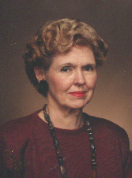

|
 Johnye E. Strickland holds the Ph.D. degree in English from the University of Arkansas at Fayetteville (1969). She is a Professor of English at the University of Arkansas at Little Rock, where she teaches Women in Literature, World Literature, and Arkansas Writers. She is currently president of Poets' Roundtable of Arkansas, past president of Arkansas Women's History Institute, and a member of the Arkansas History Association and Words: The Arkansas Literary Society.Her research interests include Oral History Interviews with Arkansas Writers, Women in Arkansas Politics, and Vietnamese Refugees processed through the Fort Chaffee, Arkansas, Relocation Center. She is in the process of placing her Arkansas Writers course on-line so that interested persons can sign up for it at any time. |